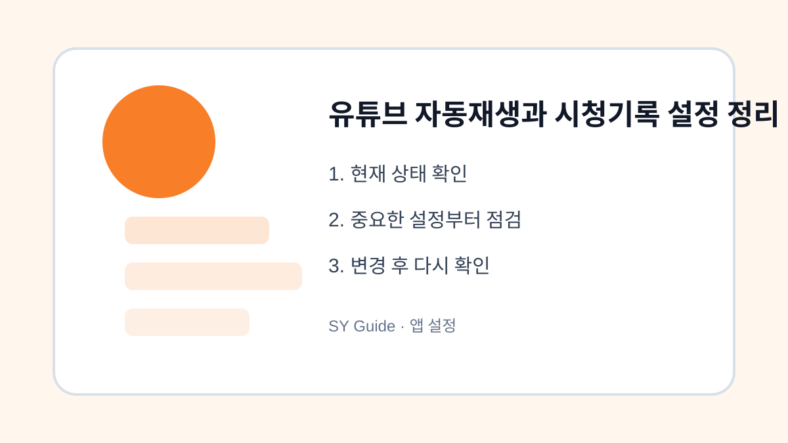

유튜브 자동재생과 시청기록 설정 정리
유튜브를 오래 보게 만드는 자동재생, 시청기록, 검색기록 설정을 차분하게 점검합니다.

유튜브는 편리하지만 자동재생과 추천 영상 때문에 예상보다 오래 보게 되는 경우가 많습니다. 시청기록은 추천 품질을 높이는 데 도움이 되지만, 가족과 함께 쓰는 기기에서는 원하지 않는 추천이 섞일 수도 있습니다. 설정을 이해하고 조정하면 시간을 줄이고 필요한 영상만 보기 쉬워집니다.
자동재생 끄기
영상이 끝난 뒤 다음 영상이 자동으로 시작되면 잠깐 보려던 시간이 길어집니다. 유튜브 앱의 자동재생 스위치를 끄면 영상이 끝난 뒤 멈추기 때문에 사용 시간을 조절하기 쉽습니다. 특히 자기 전이나 이동 중에는 자동재생을 꺼두는 편이 좋습니다.
시청기록과 검색기록 관리하기
시청기록은 추천 영상의 기준이 됩니다. 관심사가 바뀌었거나 다른 사람이 내 계정으로 영상을 봤다면 기록을 삭제하거나 일시중지할 수 있습니다. 검색기록도 마찬가지로 추천에 영향을 주므로 민감한 검색이나 일회성 검색은 정리해두면 좋습니다.
| 설정 | 켜둘 때 | 꺼둘 때 |
|---|---|---|
| 자동재생 | 연속 시청 편리 | 사용 시간 조절 쉬움 |
| 시청기록 | 추천 정확도 증가 | 추천 영향 줄임 |
| 검색기록 | 다시 찾기 쉬움 | 개인정보 부담 감소 |
앱 설정을 바꾸기 전 마지막 점검
- 자동재생을 꺼서 시청 시간을 조절하기
- 시청기록에서 원하지 않는 영상 삭제하기
- 검색기록을 주기적으로 확인하기
- 자녀나 가족과 쓰는 기기는 계정을 분리하기
- 추천이 이상하면 기록 일시중지를 활용하기
유튜브 설정은 한 번 정리해두면 일상에서 체감이 큽니다. 추천을 완전히 없애기보다 내가 원하는 방향으로 조정한다는 생각으로 접근하면 부담 없이 관리할 수 있습니다.
유튜브 기록 설정 실제 상황 예시
유튜브 기록 설정 관련 문제는 대부분 한 가지 메뉴만으로 해결되지 않습니다. 알림, 권한, 저장공간, 계정 상태처럼 여러 설정이 연결되어 있기 때문에 현재 상태를 먼저 확인하고 하나씩 바꾸는 방식이 안전합니다. 이렇게 하면 어떤 변경이 실제로 효과가 있었는지도 파악하기 쉽습니다.
유튜브 기록 설정에서 피해야 할 실수
실수는 대개 급하게 처리할 때 생깁니다. 저장공간이 부족하다고 바로 삭제하거나, 보안이 걱정된다고 모든 권한을 꺼버리면 필요한 기능까지 멈출 수 있습니다. 변경 전후를 비교하고, 중요한 자료나 계정은 공식 도움말을 확인한 뒤 진행하는 것이 좋습니다.
유튜브 기록 설정 관련 설정을 먼저 확인해야 하는 이유
유튜브 기록 설정 관련 설정은 단순히 메뉴 하나를 켜고 끄는 문제가 아니라, 실제 사용 흐름에서 어떤 불편을 줄이려는지 먼저 정해야 합니다. 같은 메뉴라도 기기 제조사, 운영체제 버전, 앱 업데이트 상태에 따라 이름이 달라질 수 있으므로 현재 화면을 기준으로 차근차근 확인하는 것이 좋습니다.
유튜브 기록 설정에서 자주 생기는 실수
많은 사용자가 바로 삭제하거나 초기화하는 방식으로 문제를 해결하려 하지만, 그 전에 현재 상태를 기록해 두면 되돌리기가 쉽습니다. 알림, 권한, 저장공간, 로그인 상태처럼 서로 연결된 항목은 하나씩 바꾼 뒤 실제로 원하는 결과가 나오는지 확인해야 합니다.
유튜브 기록 설정 점검 후 다시 볼 부분
가족 기기나 업무용 계정에서는 본인에게는 사소한 변경도 다른 사람에게 큰 불편이 될 수 있습니다. 변경 전 백업 여부를 확인하고, 중요한 계정이나 자료가 관련되어 있다면 공식 도움말을 함께 보면서 진행하는 편이 안전합니다.